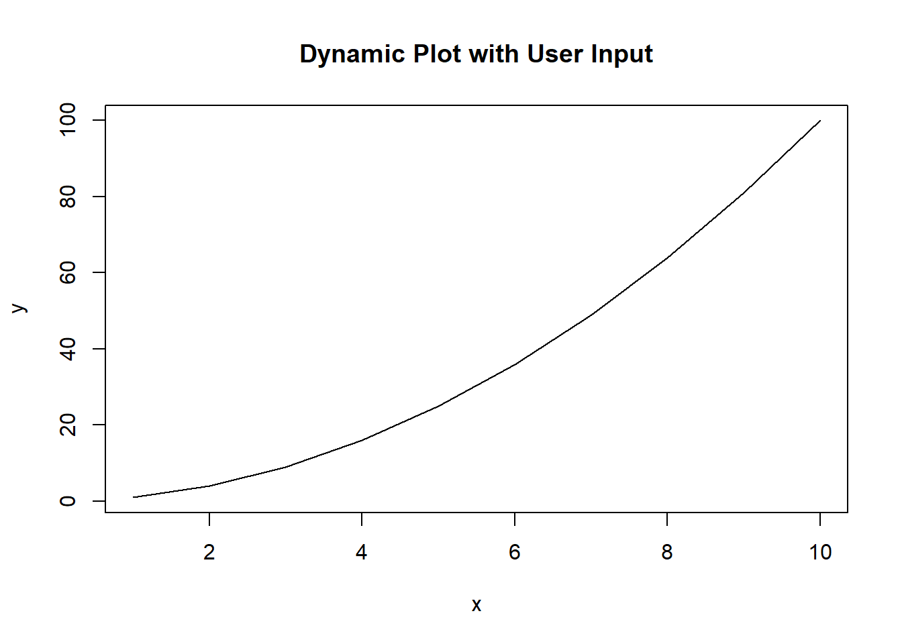

Chapter 4 CUSTOMIZING GRAPHS IN BASE R
4.1 Introduction
The main objectives of this chapter are:
- Learn to customize and enhance graphs using R’s base graphic parameters.
- Understand how to apply visual enhancements to convey information more effectively.
4.2 Graph Customization Basics
Customizing plots in R allows you to enhance the appearance and readability of the visualizations. The par() function in R is used to set or query graphical parameters.
i). Graphical Parameters (par())
- pch: Sets the plotting symbol (or point character) used in plotting functions like plot().
- lty: Sets the line type.
- lwd: Sets the line width.
- col: Sets the color of lines and points.
- bg: Sets the background color.
- cex: Sets the character size.
- mar: Sets the margins of the plot.
ii). Adding Custom Colors, Line Types, Point Shapes, and Plot Characters
- Custom Colors: You can specify custom colors using color names, hexadecimal codes, or color numbers.
- Line Types: Different line types are available, such as solid, dashed, dotted, etc.
- Point Shapes: Various point shapes are available, including circles, squares, triangles, etc.
- Plot Characters: Different plot characters, such as dots, crosses, stars, etc., can be used.
Example:
# Sample data
x <- 1:10
y <- x^2
# Plot with customized graphical parameters
par(
pch = 19, # Use solid circles for points
lty = 2, # Use dashed line
lwd = 2, # Set line width to 2
col = "blue" # Set line and point color to blue
)
plot(x, y, type = "l", main = "Customized Plot", xlab = "X", ylab = "Y")
points(x, y, col = "red") # Add points with red color
4.3 Enhancing Plot Aesthetics
Improving the aesthetics of plots is essential for effectively communicating your data. The following are some techniques for enhancing plot aesthetics in R:
1. Setting Axis Options:
Axis Labels: Use xlab and ylab parameters to set labels for x and y axes, respectively.
Tick Marks: Use axes = FALSE to remove axis tick marks and add them back using axis() function.
Axis Limits: Use xlim and ylim parameters to set limits for the x and y axes, respectively.
Example:
# Sample data
x <- 1:10
y <- x^2
# Plot with customized axis options
plot(x, y, type = "l", main = "A simple line plot", xlab = "X-axis", ylab = "Y-axis", xlim = c(0, 12), ylim = c(0, 120))
axis(side = 1, at = seq(0, 12, by = 2)) # Add x-axis tick marks
axis(side = 2, at = seq(0, 120, by = 20)) # Add y-axis tick marks
4.4 Advanced Customization Techniques
Enhancing plots in R involves more than just changing colors and labels. Here are some advanced customization techniques to make your plots more informative and visually appealing:
i). Multiple Plot Windows (mfrow and mfcol):
mfrow: Divides the plotting area into a matrix of rows and columns. Plots are filled row-wise.
mfcol: Divides the plotting area into a matrix of rows and columns. Plots are filled column-wise.
# Example using mfrow
par(mfrow = c(2, 2)) # Create a 2x2 grid for plots
plot(1:10, 1:10, main = "Plot 1", type = "l")
plot(1:10, (1:10)^2, main = "Plot 2", type = "l")
plot(1:10, (1:10)^3, main = "Plot 3", type = "l")
plot(1:10, log(1:10), main = "Plot 4", type = "l")
ii). Customizing Plots with Grid Lines, Background Color, and Themes:
Grid Lines: Use grid() function to add grid lines to the plot.
Background Color: Use par(bg = “color”) to set background color for the plot.
Themes: Use themes from packages like ggplot2 to change the overall appearance of the plot. This will be covered under ggplot2 package chapter.
Example with Grid Lines and Background Color:
4.5 Practical Examples: Exercise
Exercise 11
Read the cabbages dataset from MASS package. Remove the duplicated values of “HeadWt” and arrange the dataframe in descending order by “HeadWt” column. Plot a line plot of “HeadWt” against its square and apply blue color with the first line type. Add a second line plot of the square of cube of “HeadWt” , apply the red color and the line type should be the second one. Add a legend to the plot and position it at the top - left position with the names “Square of Head Weight” and “Cube of Head Weight” respectively. Maintain the same line types and colors that were used to plot. Add a title, ‘Comparison of Cabbage Trends’. Label the x-axis as ‘Head Weight’ and y-axis should be blank
Exercise 12 : Multiple Small Plots in One Graphic to Compare Different Data Sets
Create a vector x of a sequence of numbers from 1 to 100. Create another vector y1 which is the square of x. Create another vector y2 which is the double of x. Lastly, create the last vector y3 which is equivalent to x raised to the power of 1.5. Create three multiple small line plots and organize them in one row with three columns. All plots will use the same independent variable in the x-axis, i.e x.
- Plot x against y1. Give it the title,‘Trend 1’, x-axis should be labelled as ‘X’ while y-axis=‘Y’ and color is blue.
- Plot x against y2. Give it the title,‘Trend 2’, x-axis should be labelled as ‘X’ while y-axis=‘Y2’,col is red.
- Plot x against y3. Give it the title,‘Trend 3’, x-axis should be labelled as ‘X’ while y-axis=‘Y3’,col is green.
- Repeat the above similar plots but arranged in three rows and one column using mfcol().